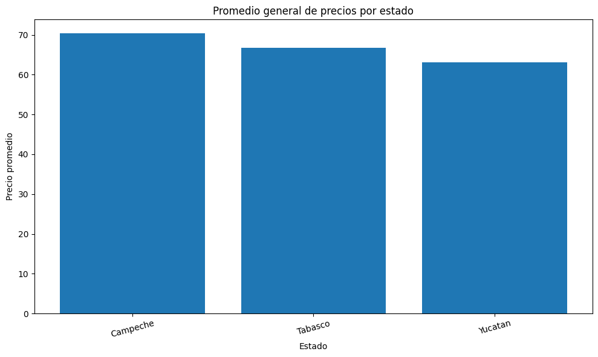
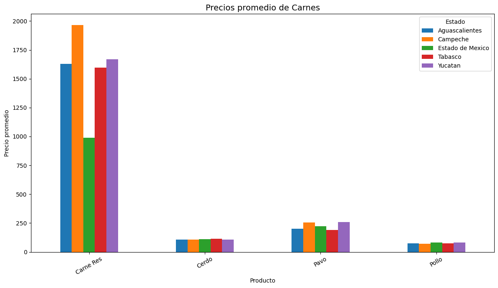
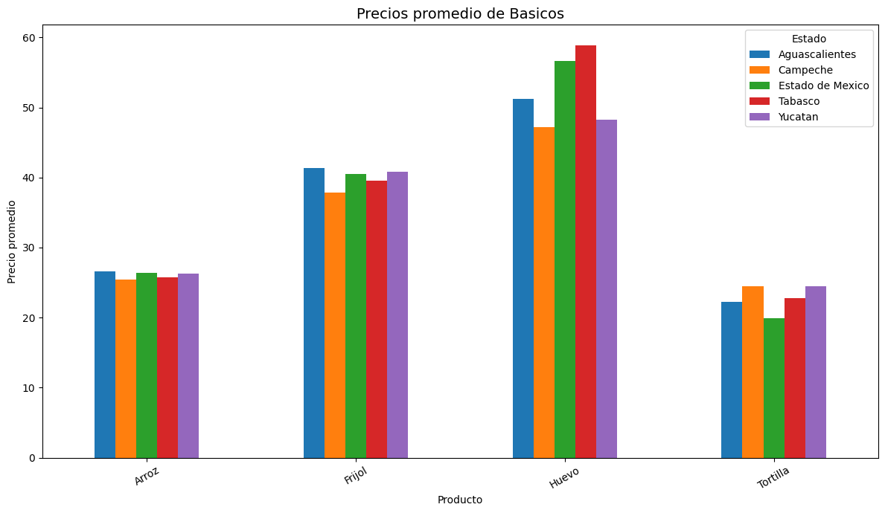
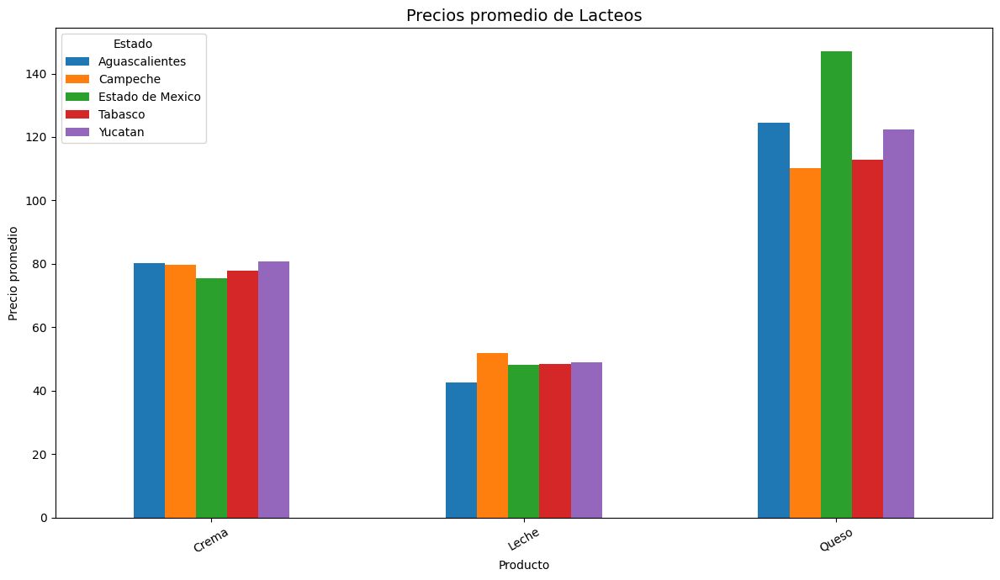
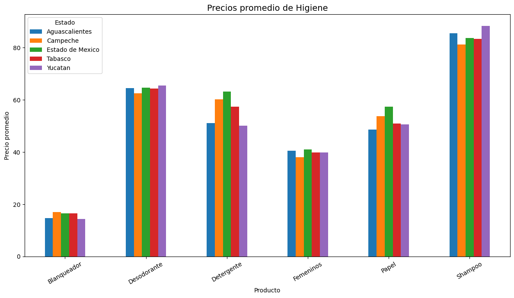

Análisis Comparativo de la Canasta Básica en México
Proyecto de Ciencia de Datos utilizando información pública de PROFECO.
Objetivo del Proyecto
Analizar y comparar los precios promedio de productos de la canasta básica entre distintos estados de México utilizando datos abiertos de PROFECO.
Metodología
El proyecto se desarrolló utilizando Python y Google Colab para el procesamiento y análisis de datos abiertos de PROFECO.
- Filtrado de datos por estados seleccionados.
- Limpieza y normalización de productos.
- Clasificación en categorías.
- Cálculo de precios promedio.
- Generación de visualizaciones comparativas.
Gráfica Resumen General

Comparación general de precios promedio entre los estados analizados.
Gráficas por Categoría
Productos Carnicos

Comparación de precios promedio de productos cárnicos entre estados seleccionados.
Productos Básicos

Los productos básicos presentan menor variación.
Productos Lácteos

Se identifican diferencias moderadas en productos lacteos.
Productos de Higiene

Los productos de higiene muestran estabilidad en precios.
Hallazgos Principales
- Los productos cárnicos mostraron las mayores variaciones de precios.
- Los productos básicos presentaron mayor estabilidad entre estados.
- Las diferencias regionales reflejan factores logísticos y comerciales.
Conclusión
El análisis permitió identificar diferencias regionales en los precios de productos de la canasta básica, evidenciando variaciones relacionadas con factores logísticos y comerciales entre estados.
Enlaces
Libreta de Google Colab:
Ver notebook en Google Colab